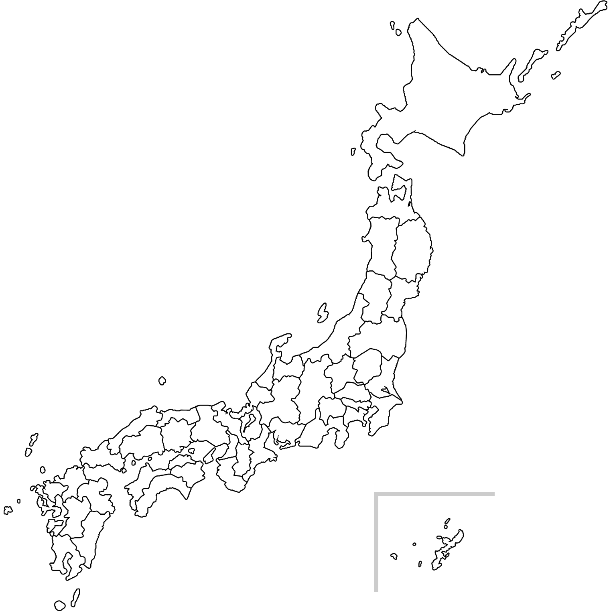

Photo Map
記憶を記録に
さぁ、写真を撮りにでかけよう‼
photo mapとは
撮影した写真を地域ごとに分類して表示
行きたい地域の綺麗な写真を検索

＜行きたい地域を選択＞
北海道・東北
北海道
青森
秋田
岩手
山形
宮城
福島
関東
東京
神奈川
埼玉
千葉
茨城
栃木
群馬
山梨
信越・北陸
新潟
長野
富山
石川
福井
東海
愛知
岐阜
静岡
三重
近畿
兵庫
京都
滋賀
奈良
和歌山
中国
鳥取
島根
岡山
広島
山口
四国
徳島
香川
愛媛
高知
九州・沖縄
福岡
佐賀
長崎
熊本
大分
宮崎
鹿児島
沖縄